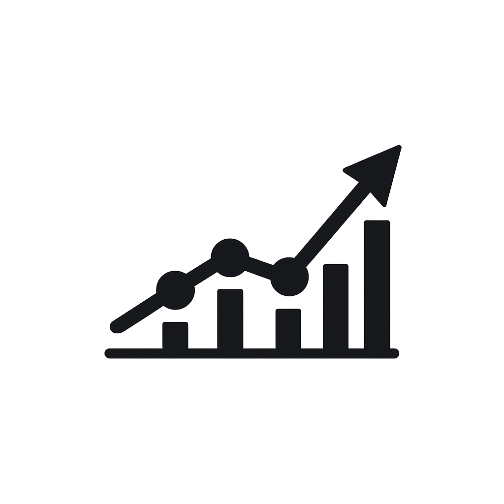
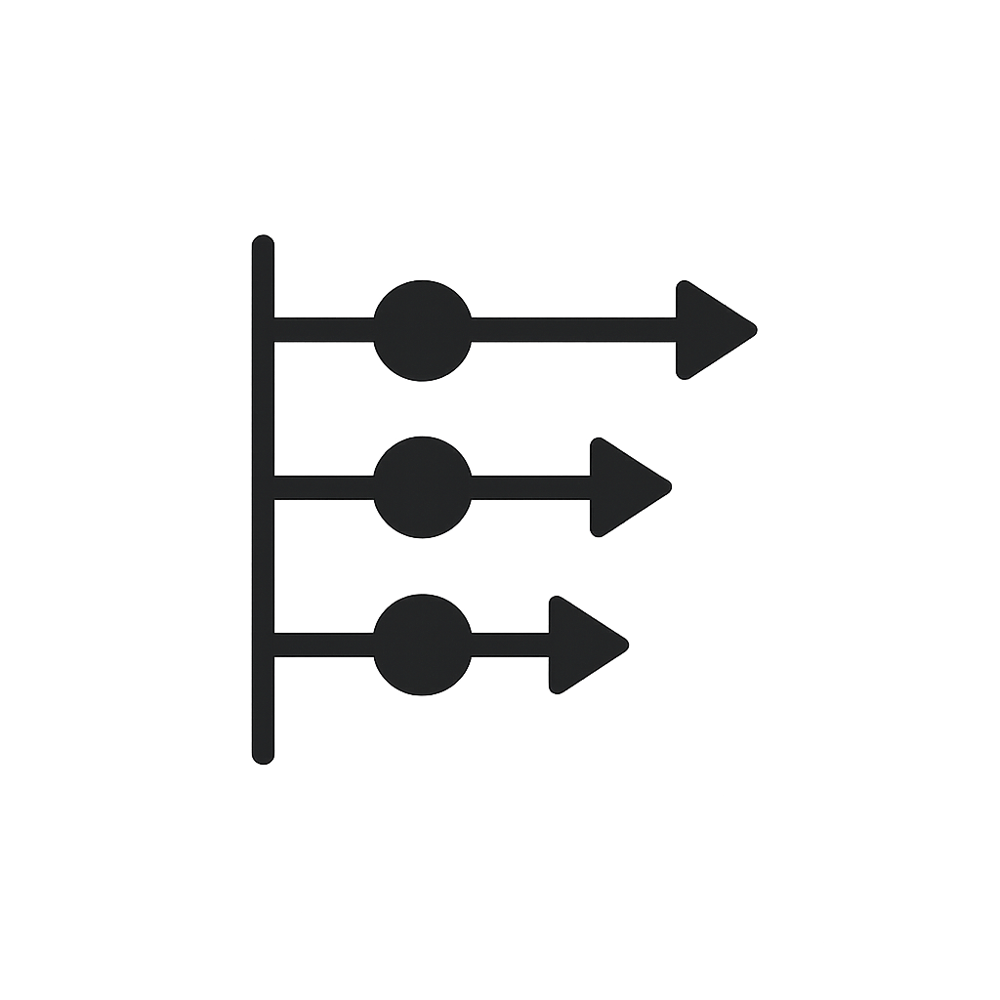
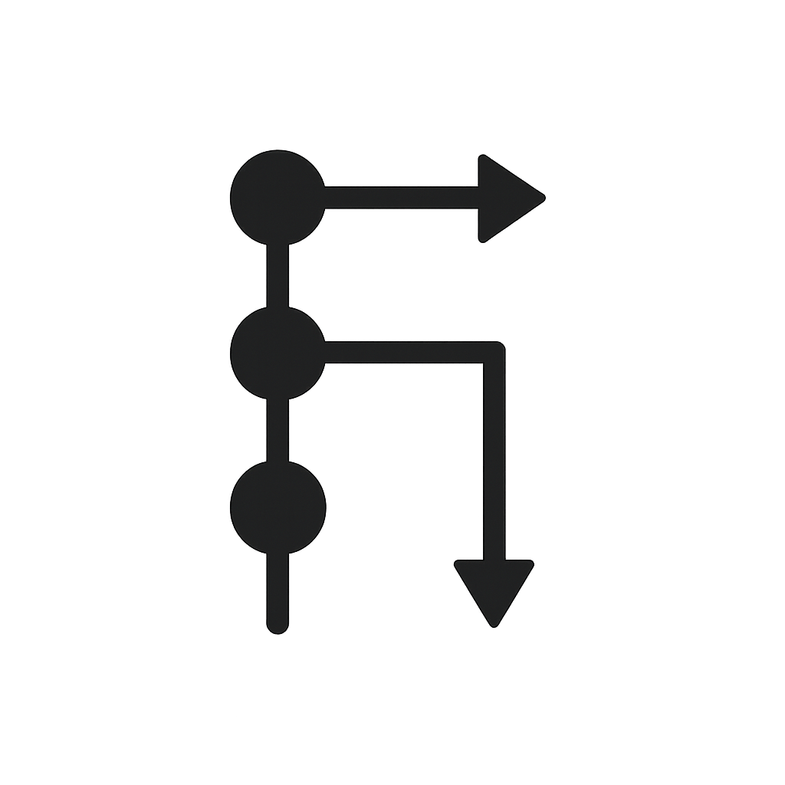

Crypto Prediction Dashboard
Interactive visualizations with error‑handled automation and resilient UI.
Live demoFull‑stack developer blending analytics, automation, and delightful UI/UX.
12 shipped
200+ hours saved
120 stars

Interactive visualizations with error‑handled automation and resilient UI.
Live demo
Frontend‑backend integrations, clean routes, and scalable design systems.
Case study